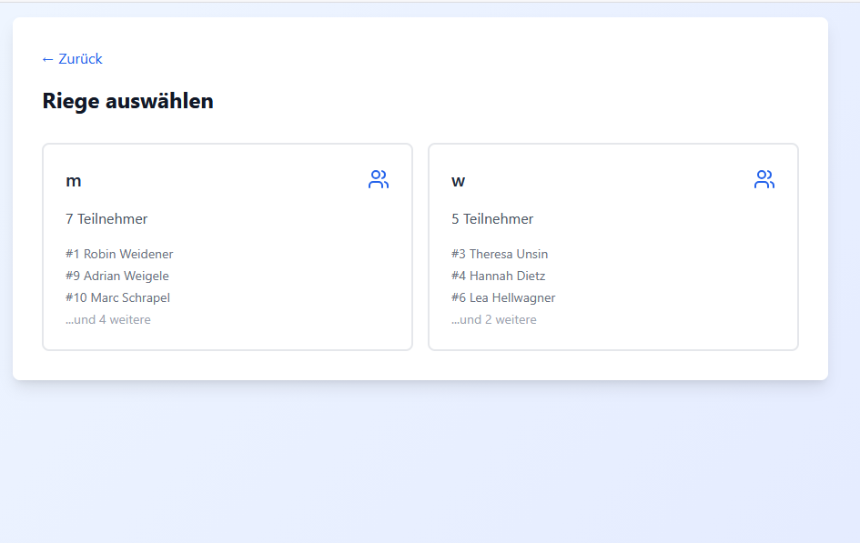
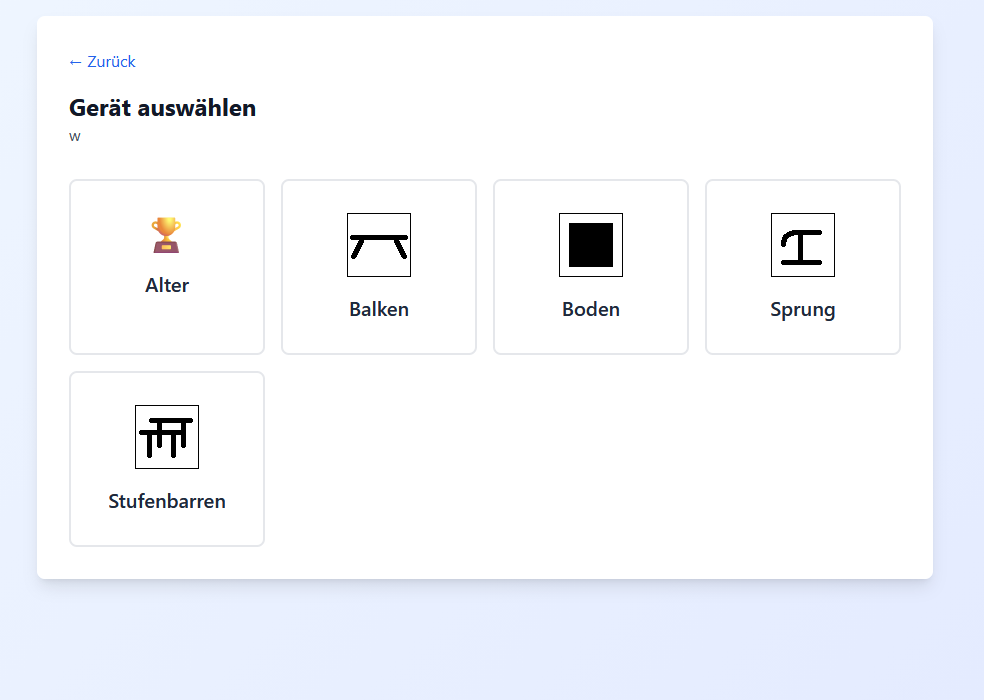
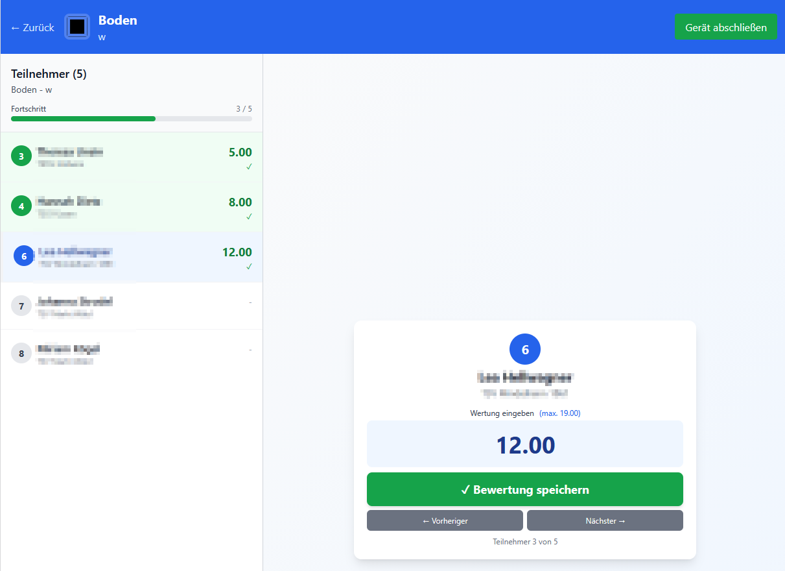
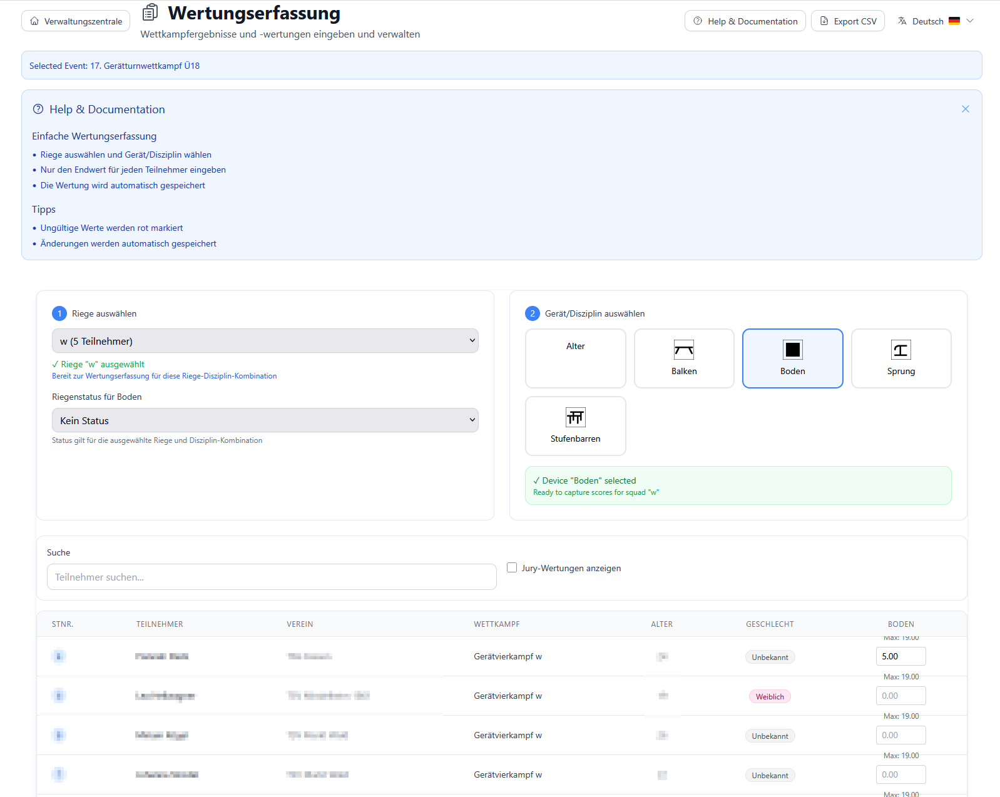
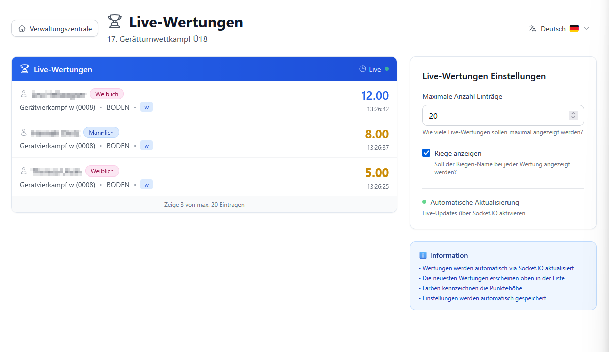
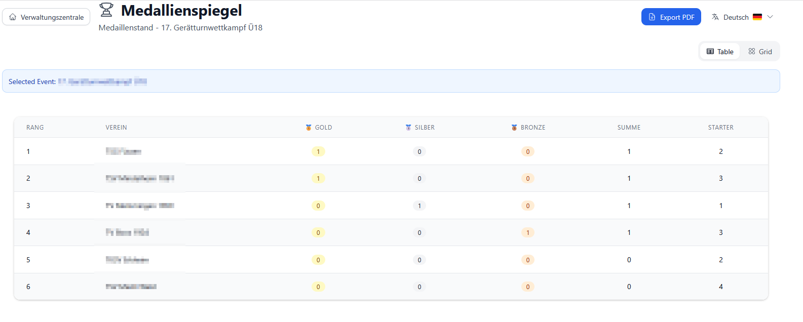

Wertungserfassung & Kampfrichter-Portal¶
Zielgruppe: Kampfrichter, Wettkampfleiter, Punkteschreiber
Schwierigkeit: ⭐⭐ Mittel
Zeitaufwand: 5-10 Minuten Einrichtung, danach schnelle Erfassung
📋 Übersicht¶
Das Kampfrichter-Portal und die Wertungserfassung ermöglichen:
- ✅ Vereinfachte Ansicht speziell für Kampfrichter (kein Admin-Ballast)
- ✅ Schnelle Noteneingabe während des Wettkampfs
- ✅ Live-Synchronisation - alle sehen sofort die aktuellen Ergebnisse
- ✅ Flexible Erfassung - Gesamtnote oder Detailnoten (E/D-Note)
- ✅ Validierung - System prüft Eingaben auf Plausibilität
- ✅ Offline-Modus - Erfassung funktioniert auch ohne Internet (lokal)
Zwei Einstiege:
1. Kampfrichter-Portal (/jury-portal) - Vereinfachte Oberfläche für Wettkampftag
2. Wertungserfassung (/score-capture) - Volle Funktionalität mit Admin-Zugriff
🎯 Kernkonzepte¶
1. Gerät-basierte Erfassung¶
Kampfrichter erfassen Noten pro Gerät: - Nicht alle Disziplinen auf einmal - Fokus auf ein Gerät zur Zeit - Beispiel: "Boden" auswählen → nur Boden-Noten eingeben
2. Riegen-basierter Workflow¶
Erfassung pro Riege: - Riege auswählen → nur Teilnehmer dieser Riege sichtbar - Nach Rotation: Nächste Riege auswählen - Übersichtlich: 6-8 Teilnehmer statt 50+
3. Live-Updates (Real-time)¶
Socket.io Synchronisation: - Kampfrichter A gibt Note ein → Kampfrichter B sieht sie sofort - Zuschauer-Display aktualisiert sich automatisch - Ergebnislisten immer aktuell
Code-Hintergrund:
// Bei Note-Eingabe: Server sendet Update an alle Clients
socket.emit('score-updated', {
eventId,
participantId,
disciplineId,
score
});
// Alle Clients empfangen Update
socket.on('score-updated', (data) => {
updateScoreMatrix(data); // Tabelle aktualisiert sich
});
4. Detailnoten vs. Gesamtnote¶
Zwei Erfassungs-Modi:
Modus 1: Gesamtnote (einfach) - Nur eine Note pro Teilnehmer und Disziplin - Beispiel: "8,5" - Schnell, für Breitensport
Modus 2: Detailnoten (komplex)
- E-Note (Execution - Ausführung)
- D-Note (Difficulty - Schwierigkeit)
- Abzüge (z.B. Zeitüberschreitung)
- Formel: Endnote = E + D - Abzüge
- Für Leistungssport
Umschalten: Checkbox "Kampfrichter-Noten anzeigen"
✅ Voraussetzungen¶
- ✅ Event erstellt - Siehe Wettkämpfe verwalten
- ✅ Wettkämpfe angelegt mit Disziplinen
- ✅ Teilnehmer zugeordnet und Startnummern vergeben
- ✅ Riegen gebildet (empfohlen) - Siehe Riegen-Management
- ✅ Zeitplanung abgeschlossen - Siehe Zeitplanung
Optional: - 📱 Tablets/Laptops für Kampfrichter (einer pro Gerät) - 🌐 Netzwerk konfiguriert - Siehe Netzwerk-Setup - 🖨️ Drucker für Ergebnislisten (optional)
🚀 Schritt 1: Kampfrichter-Portal öffnen¶
1.1 Für Kampfrichter (vereinfachte Ansicht)¶
URL: http://[server-ip]:3001/jury-portal
Beispiele:
- Lokal: http://localhost:3001/jury-portal
- Netzwerk: http://192.168.1.100:3001/jury-portal
Was Kampfrichter sehen: - ✅ Große, klare Buttons - ✅ Nur aktuelle Wettkämpfe - ✅ Keine Admin-Funktionen - ✅ Optimiert für Tablets
1.2 Für Admins (volle Funktionalität)¶
URL: http://[server-ip]:3001/score-capture
Zusätzliche Funktionen: - Filter und Suchfunktionen - Alle Wettkämpfe sichtbar - Export-Möglichkeiten - Status-Verwaltung
🎯 Schritt 2: Event und Gerät wählen¶
2.1 Event auswählen (Kampfrichter-Portal)¶

- Liste aller aktiven Events wird angezeigt
- Klicken Sie auf Ihr Event (z.B. "Bezirksmeisterschaften 2025")
- System lädt automatisch alle Wettkämpfe und Teilnehmer
Hinweis: Nur Events mit Teilnehmern werden angezeigt
2.2 Gerät (Disziplin) wählen¶

Dropdown "Disziplin": - Wählen Sie Ihr Gerät (z.B. "Boden", "Reck", "Sprung") - System zeigt nur Teilnehmer, die dieses Gerät turnen
Beispiele: - Männer: Boden, Pferd, Ringe, Sprung, Barren, Reck - Frauen: Sprung, Stufenbarren, Schwebebalken, Boden - Sondergeräte: Minitrampolin, Gerätebahnen
2.3 Riege wählen (optional, empfohlen)¶

Dropdown "Riege": - Wählen Sie Ihre aktuelle Riege (z.B. "Riege A") - System zeigt nur Teilnehmer dieser Riege (6-8 Turner)
Vorteile: - ✅ Übersichtlicher: Nur 6-8 Teilnehmer statt 50+ - ✅ Schneller: Weniger scrollen - ✅ Fokussiert: Nur aktuell turnendes Team
Ohne Riegen: - Alle Teilnehmer des Wettkampfs sichtbar - Mehr Scrollen nötig - Für kleine Wettkämpfe OK
📝 Schritt 3: Noten eingeben¶
3.1 Tabellen-Übersicht¶

Spalten: | Spalte | Inhalt | |--------|--------| | Startnr. | Startnummer des Teilnehmers | | Name | Nachname, Vorname | | Verein | Vereins-Badge | | Geschlecht | 🔵 M / 🔴 W | | Alter | Berechnetes Alter | | [Gerät] | Noteingabe-Feld (z.B. "Boden") |
3.2 Gesamtnote eingeben (Einfacher Modus)¶
Standard-Ansicht (Checkbox "Kampfrichter-Noten" AUS):
- Klicken Sie in das Notenfeld beim Teilnehmer
- Eingeben der Note (z.B. "8.5" oder "8,5")
- Enter drücken oder woanders klicken → Note wird gespeichert
Validierung: - ✅ Gültig: 0.0 - 10.0 (oder bis max. Höchstwertung) - ❌ Ungültig: Negative Zahlen, über Max, Buchstaben - 🟡 Warnung: System zeigt roten Rahmen bei ungültigen Werten
Speichern: - Automatisch beim Verlassen des Feldes - Sofortige Synchronisation an alle Clients - ✅ Grüner Haken erscheint kurz bei Erfolg
Code-Hintergrund:
// Validierung
const getScoreValidation = (disciplineId, scoreValue) => {
const maxScore = discipline.maxScore || 10.0;
const score = parseFloat(scoreValue);
if (isNaN(score)) return { isValid: false, message: 'Keine Zahl' };
if (score < 0) return { isValid: false, message: 'Negativ' };
if (score > maxScore) return { isValid: false, message: `Max: ${maxScore}` };
return { isValid: true };
};
// Speichern
const saveScore = async (participantId, disciplineId) => {
await apiPost('/scores', {
participantId,
disciplineId,
score: scoreMatrix[`${participantId}-${disciplineId}`]
});
// Socket.io: Alle benachrichtigen
socket.emit('score-updated', { eventId, participantId, disciplineId });
};
3.3 Detailnoten eingeben (Kampfrichter-Modus)¶
Erweiterte Ansicht (Checkbox "Kampfrichter-Noten" EIN):

Zusätzliche Felder (pro Disziplin):
- E-Note (Execution): Ausführungsnote
- D-Note (Difficulty): Schwierigkeitsnote
- Abzüge: z.B. Zeitüberschreitung, Außer-Gerät
- ND (Neutrale Deduktion): Zeitabzüge
- Endnote: Automatisch berechnet
Beispiel:
E-Note: 8.5
D-Note: 2.1
Abzug 1: 0.1 (kleine Wackler)
Abzug 2: 0.0
ND: 0.3 (Zeitüberschreitung)
-------------------
Endnote: 10.2 = (8.5 + 2.1) - 0.1 - 0.3
Formel-System:
- Formeln in Disziplin-Konfiguration definiert
- System berechnet automatisch
- Beispiel-Formel: {E-Note} + {D-Note} - {Abzüge} - {ND}
Code-Referenz:
// Formel-Evaluierung
const evaluateFormula = (formula: string, fieldValues: {[fieldId: number]: string}) => {
let result = formula;
// Ersetze {Feldname} durch tatsächliche Werte
for (const [fieldId, value] of Object.entries(fieldValues)) {
const field = disciplineFields.find(f => f.id === Number(fieldId));
if (field) {
result = result.replace(`{${field.name}}`, value || '0');
}
}
// Berechne mathematischen Ausdruck
try {
return eval(result); // Sicher: nur Zahlen und Operatoren
} catch (e) {
return 0;
}
};
3.4 Schnelleingabe-Tipps¶
Tastatur-Shortcuts: - Tab: Zum nächsten Feld - Shift+Tab: Zum vorherigen Feld - Enter: Speichern und zum nächsten Teilnehmer - Pfeil-Tasten: Navigation in Tabelle
Bulk-Eingabe (für gleiche Noten): - Aktuell nicht implementiert - Zukünftiges Feature (geplant)
Kopieren/Einfügen: - Aus Excel: ✅ Funktioniert - Format: Einfache Zahlen (z.B. "8.5")
🔄 Schritt 4: Live-Ergebnisse anzeigen¶
4.1 Live-Scores für Zuschauer¶

URL: http://[server-ip]:3001/live-scores
Features: - ✅ Automatische Aktualisierung (Real-time via Socket.io) - ✅ Rangliste nach aktuellem Stand - ✅ Alle Disziplinen auf einen Blick - ✅ Gesamtpunktzahl (Summe aller Geräte)
Anzeigemodi: - Nach Wettkampf (alle Teilnehmer) - Nach Riege (nur aktuelle Turner) - Top 10 / Top 20 / Alle
Beamer/TV-Anzeige: - Vollbild-Modus (F11) - Automatischer Scroll (optional) - Farb-Highlightning für Podium (Gold/Silber/Bronze)
4.2 Status-Verwaltung¶
Riegen-Status setzen:
| Status | Bedeutung | Farbe |
|---|---|---|
| Nicht gestartet | Riege hat noch nicht begonnen | 🔵 Blau |
| In Bearbeitung | Riege turnt gerade | 🟡 Gelb |
| Abgeschlossen | Riege fertig, Noten komplett | 🟢 Grün |
Verwendung: 1. Dropdown "Status" bei Riege 2. Wählen Sie aktuellen Status 3. Live-Anzeige zeigt Status-Badge
Nutzen: - Zuschauer sehen Fortschritt - Wettkampfleiter hat Übersicht - Kampfrichter wissen, welche Riege als nächstes
📊 Schritt 5: Ergebnisse exportieren¶
5.1 CSV-Export¶
Button: "Exportieren" (oben rechts in Wertungserfassung)
Inhalt: - Alle Teilnehmer mit Noten - Alle Disziplinen - Gesamtpunktzahl - Rang
Verwendung: - Import in Excel - Weitere Analysen - Backup der Ergebnisse
5.2 PDF-Urkunden¶
Siehe separater Guide: Urkunden erstellen
5.3 Medaillenspiegel¶

URL: http://[server-ip]:3001/medallienspiegel
Zeigt: - 🥇 Gold / 🥈 Silber / 🥉 Bronze pro Verein - Gesamt-Medaillen-Zählung - Ranking der Vereine
🎯 Tipps & Best Practices¶
✅ Do's¶
- Ein Tablet pro Gerät
- Jeder Kampfrichter sein eigenes Tablet
- Unabhängige Erfassung
-
Keine Wartezeiten
-
Riegen nutzen
- Übersichtlicher
- Schnellere Erfassung
-
Weniger Fehler
-
Vor Wettkampf testen
- Test-Noten eingeben
- Live-Anzeige prüfen
-
Netzwerk testen
-
Regelmäßig speichern
- System speichert automatisch
-
Aber: Bei Unsicherheit F5 drücken (neu laden)
-
Backup-Plan
- Papier-Wertungskarten bereithalten
- Bei Netzwerk-Ausfall: Offline-Erfassung
- Später manuell nachtragen
❌ Don'ts¶
- Nicht mehrfach gleiche Note eingeben
- System überschreibt bei Duplikaten
-
Kein Durchschnitts-System (außer bei E/D-Noten)
-
Nicht während Eingabe Seite neu laden
- Ungespeicherte Noten gehen verloren
-
Warten bis grüner Haken erscheint
-
Nicht ohne Test-Lauf starten
- Immer vorher ausprobieren
-
Mit Dummy-Daten üben
-
Nicht alle Geräte gleichzeitig erfassen
- Fokus auf ein Gerät
- Nach Rotation wechseln
❓ Häufige Probleme & Lösungen¶
Problem 1: "Note wird nicht gespeichert"¶
Symptome: - Eingabe verschwindet nach Enter - Kein grüner Haken
Ursachen: - Netzwerk-Verbindung unterbrochen - Server nicht erreichbar - Validierung schlägt fehl
Lösung:
1. Netzwerk prüfen: Kann Tablet Server erreichen?
- Ping http://[server-ip]:3001
2. Validierung prüfen: Ist Note im gültigen Bereich?
- Rot umrandetes Feld = ungültig
3. Seite neu laden (F5) und erneut eingeben
Problem 2: "Teilnehmer fehlt in Liste"¶
Ursachen: - Falsches Event gewählt - Falsche Disziplin gewählt - Falsche Riege gewählt - Teilnehmer nicht angemeldet
Lösung: 1. Event prüfen: Richtiges Event im Selector? 2. Disziplin prüfen: Turnt Teilnehmer dieses Gerät? 3. Riege prüfen: "Alle Riegen" auswählen 4. Teilnehmer-Verwaltung: Ist Teilnehmer zugeordnet?
Problem 3: "Live-Ergebnisse aktualisieren nicht"¶
Ursachen: - Socket.io-Verbindung unterbrochen - Browser-Cache - Firewall blockiert WebSocket
Lösung: 1. Seite neu laden (F5) 2. Browser-Cache leeren (Strg+Shift+R) 3. Firewall prüfen: Port 3001 offen? - Siehe Netzwerk-Setup 4. Fallback: Manuelle Aktualisierung (F5 alle 30 Sek.)
Problem 4: "Endnote falsch berechnet"¶
Ursache: Formel in Disziplin falsch konfiguriert
Lösung:
1. Admin-Panel: Disziplinen bearbeiten
2. Formel prüfen: Syntax korrekt?
- Beispiel: {E-Note} + {D-Note} - {Abzüge}
3. Felder prüfen: Alle Felder existieren?
4. Neu berechnen: Noten neu eingeben
Problem 5: "Kampfrichter-Noten fehlen"¶
Ursache: Checkbox "Kampfrichter-Noten anzeigen" AUS
Lösung: 1. Checkbox aktivieren (oben rechts) 2. System zeigt alle Detail-Felder 3. Hinweis: Nur Felder zeigen, die in Disziplin definiert sind
🔧 Erweiterte Funktionen¶
Offline-Modus¶
Funktionsweise: - Browser cached Daten lokal - Eingaben werden vorgemerkt - Bei Verbindung: Automatische Synchronisation
Aktivieren: - Automatisch bei Verbindungsverlust - Gelbes Banner: "Offline-Modus aktiv"
Limitierungen: - Keine Live-Updates von anderen Geräten - Konflikte möglich (bei gleichzeitiger Eingabe)
Multi-Kampfrichter-System¶
Scenario: 3 Kampfrichter am Gerät
Lösung A: Durchschnitt bilden - Jeder Kampfrichter gibt eigene Note ein - System berechnet Durchschnitt - Höchste und niedrigste Note streichen (optional)
Lösung B: Haupt-Kampfrichter - Nur einer gibt Note ein - Andere Kampfrichter auf Papier - Übertragung durch Haupt-KR
Aktueller Status: Lösung B implementiert (einfacher)
Zukünftig: Multi-KR-System geplant (Point 140+)
Formeln & Berechnungen¶
Eigene Formeln definieren (Admin):
1. Gehe zu Disziplinen → Bearbeiten
2. Tab "Felder & Formeln"
3. Definiere Felder (z.B. "E-Note", "D-Note")
4. Definiere Formel: {E-Note} + {D-Note} - {Abzüge}
5. Speichern
Unterstützte Operatoren:
- + Addition
- - Subtraktion
- * Multiplikation
- / Division
- ( ) Klammern
Beispiele:
Einfach: {Endnote}
Addition: {E-Note} + {D-Note}
Komplex: ({E-Note} + {D-Note}) - {Abzug1} - {Abzug2} - {ND}
Durchschnitt: ({KR1} + {KR2} + {KR3}) / 3
📈 Nächste Schritte¶
Nach der Wertungserfassung:
- Ergebnisse veröffentlichen
- Live-Scores für Zuschauer
- Medaillenspiegel
-
Ranglisten
- Layouts auswählen
- Massen-Export
-
PDF generieren
- CSV-Export
- Excel-Analysen
-
Archivierung
- Teilnehmer-Statistiken
- Vereins-Vergleiche
- Leistungs-Entwicklung
🔗 Verwandte Dokumentation¶
Benutzer-Guides¶
Developer-Guides¶
- Point 123: ScoreCapture Refactoring
- Socket.io Real-time Updates
- Score Validation System
- Formula Engine
Deployment¶
Referenz¶
📞 Support¶
Probleme während des Wettkampfs?
- Wettkampfleiter kontaktieren (vor Ort)
- Fallback: Papier-Wertungskarten nutzen
- Nach Wettkampf: GitHub Issue erstellen
Vorbereitung & Training: - GitHub Issues - TurnFix Dokumentation
Version: 2.0
Letzte Aktualisierung: 05.11.2025
Autor: TurnFix Team
Feedback: Gerne als GitHub Issue einreichen!